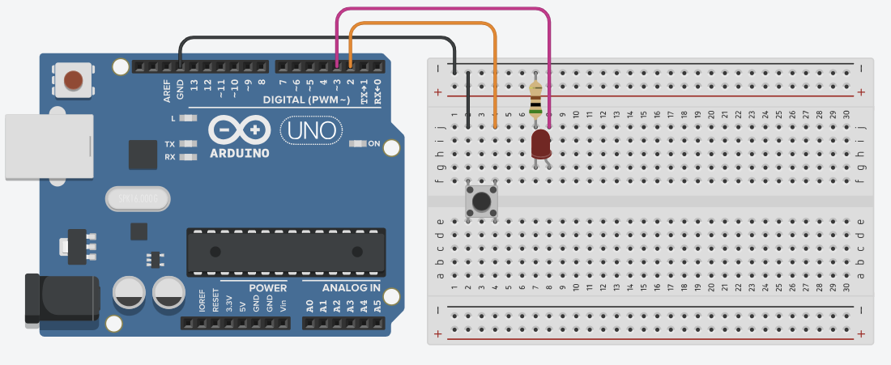
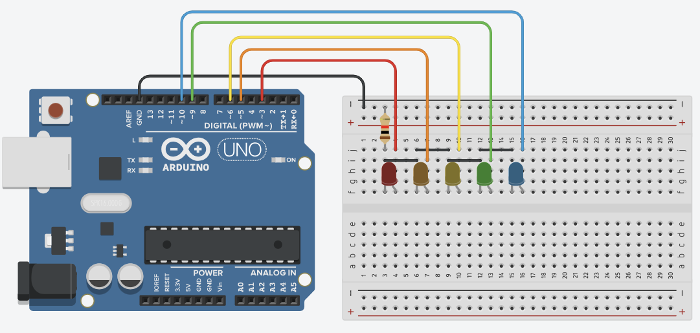
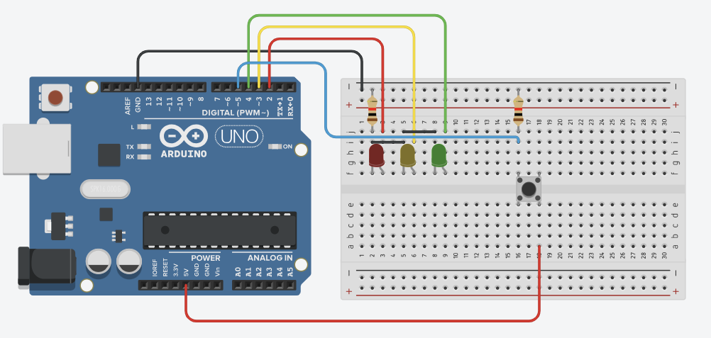
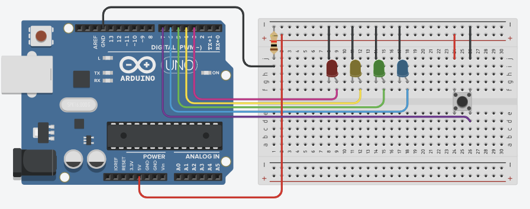
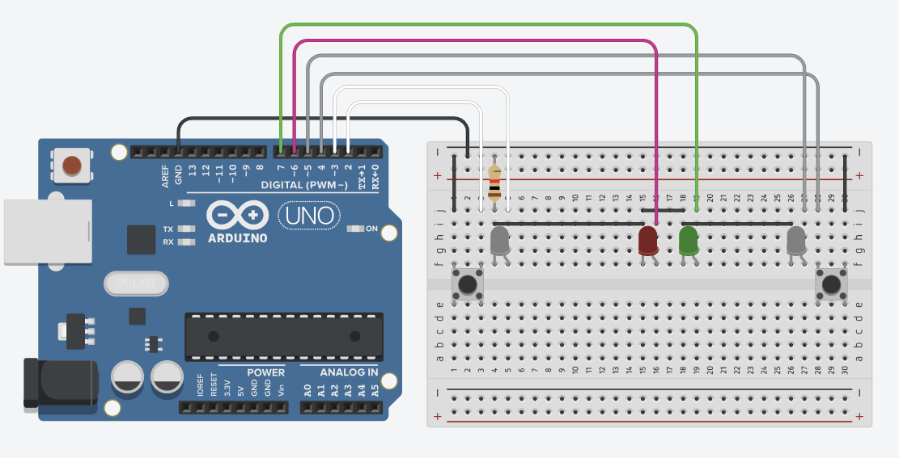
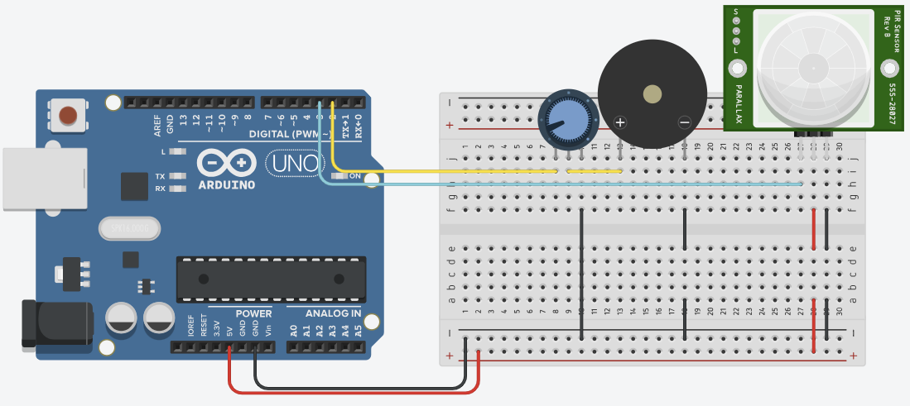
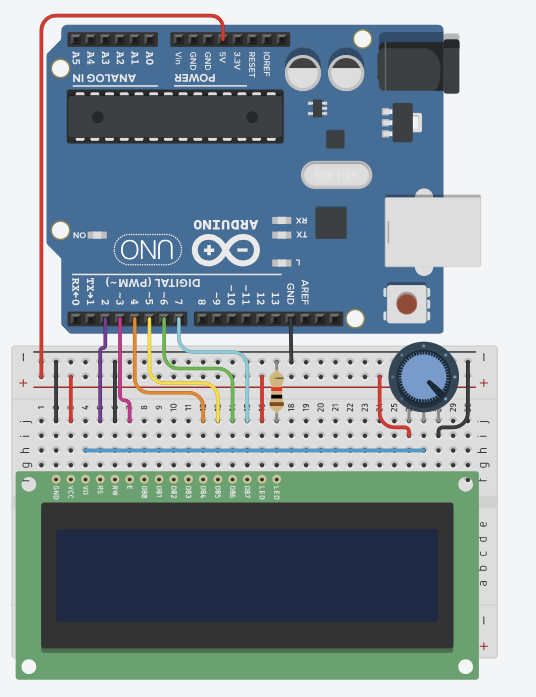
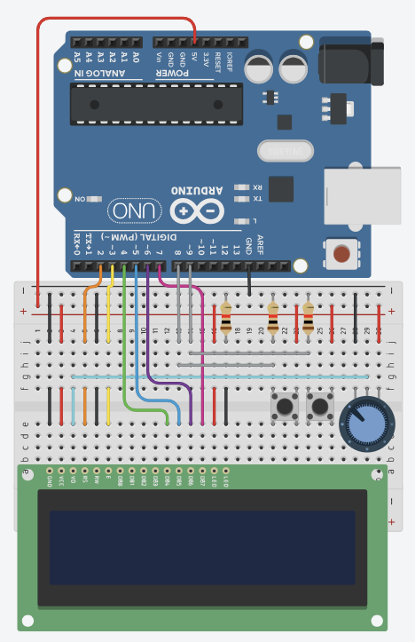
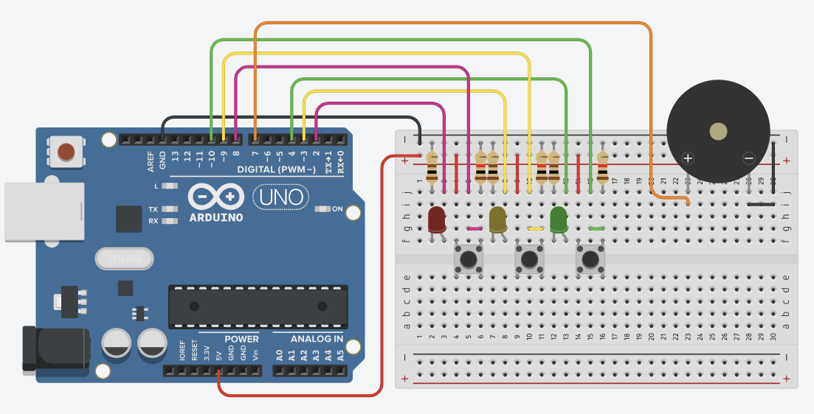

Objective
The purpose of this project is to learn and practice using an Arduino Uno to create programs to achieve visual and audio outputs based on autonomous code or user inputs. We will later utilize the skills gained to create a game of Simon using the Arduino UNO. This is a project for the Engineering Development and Design course at Bayside High School.
Activity
Code 1
Create a simple code where the LED remain on until a pushbutton is pressed. Once it is pressed, the LED will turn off and stay off until the button is pressed again.
Code 1
bool light = false;
bool justPressed = false;
void setup() {
pinMode(2, INPUT_PULLUP);
pinMode(3, OUTPUT);
}
void loop() {
if (digitalRead(2) == LOW && justPressed == false) {
justPressed = true;
light = !light;
}
if (digitalRead(2) == HIGH) {
justPressed = false;
}
digitalWrite(3, light);
}
Circuit for Code 1
Code 2
The goal is to create a wave function, LEDs turn on and off in an order. Then, all the LEDs turn on in a wave, then off in a wave for a visually appealing effect.
Code 2
void setup() {
Serial.begin(9600);
pinMode(2, OUTPUT);
pinMode(3, OUTPUT);
pinMode(4, OUTPUT);
pinMode(5, OUTPUT);
pinMode(6, OUTPUT);
}
void loop() {
for(int i = 0; i < 25; i++) {
Serial.print((i%5) + 2);
digitalWrite(i % 5 == 0 ? 6 : (i%5) + 1, LOW);
digitalWrite((i%5) + 2, HIGH);
delay(250);
}
for(int x = 0; x < 5; x++) {
for(int i = 2; i < 7; i++) {
digitalWrite(i, HIGH);
}
delay(500);
for(int i = 2; i < 7; i++) {
digitalWrite(i, LOW);
}
delay(500);
}
}
Circuit for Code 2
Code 3
The LEDs will slowly turn on from left to right, then slowly turn off from right to left.
Code 3
int leds[5] = {3, 5, 6, 9, 10};
int i = 0;
void setup()
{
Serial.begin(9600);
for(int led : leds) {
pinMode(led, OUTPUT);
}
}
void changeState(String state, int pin) {
for(int i = 0; i <= 255; i = i + 5) {
int val = state == "HIGH" ? i : -(i - 255);
Serial.print(val);
Serial.print(" ");
analogWrite(leds[pin], val);
}
}
void loop() {
for(i = 0; i <= 4; i++) {
changeState("HIGH", i);
}
for(i = 4; i >= 0; i--) {
changeState("LOW", i);
}
}
Circuit for Code 3
Code 4
The goal is to create a "semi-traffic light". When a push button is pressed, the light will become green, then yellow, then red.
Code 4
void setup() {
pinMode(2, OUTPUT);
pinMode(3, OUTPUT);
pinMode(4, OUTPUT);
pinMode(5, INPUT);
digitalWrite(2, HIGH);
}
void loop() {
if (digitalRead(5) == HIGH) {
digitalWrite(2, LOW);
digitalWrite(4, HIGH);
delay(3000);
digitalWrite(4, LOW);
digitalWrite(3, HIGH);
delay(2000);
digitalWrite(3, LOW);
digitalWrite(2, HIGH);
delay(3000);
}
}
Circuit for Code 4
Code 5
Create a wave function but include a pushbutton such that when the button is pressed, the LEDs will turn off and be paused in that state until it is released, in which it will continue the wave function.
Code 5
int state = 3;
void setup() {
pinMode(3, OUTPUT);
pinMode(4, OUTPUT);
pinMode(5, OUTPUT);
pinMode(6, OUTPUT);
pinMode(7, INPUT);
}
void loop() {
if (digitalRead(7) == LOW) {
digitalWrite(state, LOW);
digitalWrite(state + 1 == 7 ? 3 : state + 1, HIGH);
state = state + 1 == 7 ? 3 : state + 1
delay(1000);
}
}
Circuit for Code 5
Code 6
Create a code that simulates a simplified wack-a-mole game. There are two push buttons, and an LED associated to each push button. When the LED is on, the associated push button must be pressed within a time period. If the button is pressed, a green LED lights up to signal you scored a point. If the button is not pressed or the wrong button is pressed, a red LED lights up to signal you missed.
Code 6
int moleSwitch1 = 2;
int moleSwitch2 = 4;
int moleLED1 = 3;
int moleLED2 = 5;
int failLED = 6;
int winLED = 7;
int points = 0;
int misses = 0;
void setup() {
pinMode(moleSwitch1, INPUT_PULLUP);
pinMode(moleSwitch2, INPUT_PULLUP);
pinMode(moleLED1, OUTPUT);
pinMode(moleLED2, OUTPUT);
pinMode(failLED, OUTPUT);
pinMode(winLED, OUTPUT);
Serial.begin(9600);
}
void loop() {
while(misses < 5) {
if(random(2)) {
popMole(moleSwitch1, moleLED1);
} else {
popMole(moleSwitch2, moleLED2);
}
randomSeed(millis());
delay(random(100, 300));
}
for(int i = 0; i < 10; i++) {
Serial.println("YOU LOST");
Serial.print("Points: ");
Serial.println(points);
}
delay(10000);
}
void popMole(int button, int led) {
int waitTime;
digitalWrite(led, HIGH);
long startTime = millis();
if(points < 5) { // piecewise function
waitTime = random(2750, 3250);
} else if(points >= 5 && points <= 20) {
waitTime = (-100 * points) + 3500;
waitTime = random(waitTime - 250, waitTime + 250);
} else if(points > 20) {
waitTime = random(1000 * pow(points, -0.25) + 250, 1000 * pow(2, -0.25) + 750);
}
if(waitTime < 100) {
return;
}
Serial.print(waitTime);
while(millis() - startTime < waitTime) {
if(digitalRead(button) == LOW) { // Pushed button on time
points++;;
digitalWrite(led, LOW);
digitalWrite(winLED, HIGH);
delay(waitTime / 5);
digitalWrite(winLED, LOW);
Serial.print(" - Hit! Points: ");
Serial.println(points);
return;
}
}
misses++;
digitalWrite(led, LOW);
digitalWrite(failLED, HIGH);
delay(waitTime / 5);
digitalWrite(failLED, LOW);
Serial.print(" - Miss! ");
Serial.print(5 - misses);
Serial.println(" Lives Left");
}
Circuit for Code 6
Code 7
Using a piezo buzzer, create a code that plays a song. The song chosen is the Harry Potter theme song, but program it in a way such that the notes can be switched out.
Code 7
#define NOTE_B0 31
#define NOTE_C1 33
#define NOTE_CS1 35
#define NOTE_D1 37
#define NOTE_DS1 39
#define NOTE_E1 41
#define NOTE_F1 44
#define NOTE_FS1 46
#define NOTE_G1 49
#define NOTE_GS1 52
#define NOTE_A1 55
#define NOTE_AS1 58
#define NOTE_B1 62
#define NOTE_C2 65
#define NOTE_CS2 69
#define NOTE_D2 73
#define NOTE_DS2 78
#define NOTE_E2 82
#define NOTE_F2 87
#define NOTE_FS2 93
#define NOTE_G2 98
#define NOTE_GS2 104
#define NOTE_A2 110
#define NOTE_AS2 117
#define NOTE_B2 123
#define NOTE_C3 131
#define NOTE_CS3 139
#define NOTE_D3 147
#define NOTE_DS3 156
#define NOTE_E3 165
#define NOTE_F3 175
#define NOTE_FS3 185
#define NOTE_G3 196
#define NOTE_GS3 208
#define NOTE_A3 220
#define NOTE_AS3 233
#define NOTE_B3 247
#define NOTE_C4 262
#define NOTE_CS4 277
#define NOTE_D4 294
#define NOTE_DS4 311
#define NOTE_E4 330
#define NOTE_F4 349
#define NOTE_FS4 370
#define NOTE_G4 392
#define NOTE_GS4 415
#define NOTE_A4 440
#define NOTE_AS4 466
#define NOTE_B4 494
#define NOTE_C5 523
#define NOTE_CS5 554
#define NOTE_D5 587
#define NOTE_DS5 622
#define NOTE_E5 659
#define NOTE_F5 698
#define NOTE_FS5 740
#define NOTE_G5 784
#define NOTE_GS5 831
#define NOTE_A5 880
#define NOTE_AS5 932
#define NOTE_B5 988
#define NOTE_C6 1047
#define NOTE_CS6 1109
#define NOTE_D6 1175
#define NOTE_DS6 1245
#define NOTE_E6 1319
#define NOTE_F6 1397
#define NOTE_FS6 1480
#define NOTE_G6 1568
#define NOTE_GS6 1661
#define NOTE_A6 1760
#define NOTE_AS6 1865
#define NOTE_B6 1976
#define NOTE_C7 2093
#define NOTE_CS7 2217
#define NOTE_D7 2349
#define NOTE_DS7 2489
#define NOTE_E7 2637
#define NOTE_F7 2794
#define NOTE_FS7 2960
#define NOTE_G7 3136
#define NOTE_GS7 3322
#define NOTE_A7 3520
#define NOTE_AS7 3729
#define NOTE_B7 3951
#define NOTE_C8 4186
#define NOTE_CS8 4435
#define NOTE_D8 4699
#define NOTE_DS8 4978
#define REST 0
int tempo = 144;
int buzzer = 2;
// notes of the melody followed by the duration.
// a 4 means a quarter note, 8 an eighteenth , 16 sixteenth, so on
// !!negative numbers are used to represent dotted notes,
// so -4 means a dotted quarter note.
int melody[] = {
// Hedwig's theme from the Harry Potter Movies
// Score from https://musescore.com/user/3811306/scores/4906610
REST, 2, NOTE_D4, 4,
NOTE_G4, -4, NOTE_AS4, 8, NOTE_A4, 4,
NOTE_G4, 2, NOTE_D5, 4,
NOTE_C5, -2,
NOTE_A4, -2,
NOTE_G4, -4, NOTE_AS4, 8, NOTE_A4, 4,
NOTE_F4, 2, NOTE_GS4, 4,
NOTE_D4, -1,
NOTE_D4, 4,
NOTE_G4, -4, NOTE_AS4, 8, NOTE_A4, 4, //10
NOTE_G4, 2, NOTE_D5, 4,
NOTE_F5, 2, NOTE_E5, 4,
NOTE_DS5, 2, NOTE_B4, 4,
NOTE_DS5, -4, NOTE_D5, 8, NOTE_CS5, 4,
NOTE_CS4, 2, NOTE_B4, 4,
NOTE_G4, -1,
NOTE_AS4, 4,
NOTE_D5, 2, NOTE_AS4, 4,//18
NOTE_D5, 2, NOTE_AS4, 4,
NOTE_DS5, 2, NOTE_D5, 4,
NOTE_CS5, 2, NOTE_A4, 4,
NOTE_AS4, -4, NOTE_D5, 8, NOTE_CS5, 4,
NOTE_CS4, 2, NOTE_D4, 4,
NOTE_D5, -1,
REST,4, NOTE_AS4,4,
NOTE_D5, 2, NOTE_AS4, 4,//26
NOTE_D5, 2, NOTE_AS4, 4,
NOTE_F5, 2, NOTE_E5, 4,
NOTE_DS5, 2, NOTE_B4, 4,
NOTE_DS5, -4, NOTE_D5, 8, NOTE_CS5, 4,
NOTE_CS4, 2, NOTE_AS4, 4,
NOTE_G4, -1,
};
// sizeof gives the number of bytes, each int value is composed of two bytes (16 bits)
// there are two values per note (pitch and duration), so for each note there are four bytes
int notes = sizeof(melody) / sizeof(melody[0]) / 2;
// calculate duration of a whole note
int wholenote = (60000 * 4) / tempo;
int divider = 0, noteDuration = 0;
void setup() {
pinMode (2, OUTPUT);
pinMode (3, INPUT);
}
void loop() {
if (digitalRead(3)==HIGH) {
for (int thisNote = 0; thisNote < notes * 2; thisNote = thisNote + 2) {
divider = melody[thisNote + 1];
if (divider > 0) {
// regular note
noteDuration = (wholenote) / divider;
} else if (divider < 0) {
// dotted notes
noteDuration = (wholenote) / abs(divider);
noteDuration *= 1.5; // increases the duration by 50% for dotted notes
}
// only play the note for 90% of the duration, leaving 10% as a pause
tone(buzzer, melody[thisNote], noteDuration*0.9);
delay(noteDuration);
noTone(buzzer);
}
}
}
Circuit for Code 7
Code 8
Utilize the LiquidCrystal library to create a simple LCD display that displays static text.
Code 8
#include <LiquidCrystal.h>
char lcdLine1[] = "Hello World";
char lcdLine2[] = "Testing";
LiquidCrystal lcd(2, 3, 4, 5, 6, 7);
void setup() {
lcd.begin(16, 2);
lcd.setCursor(0, 0);
lcd.print(lcdLine1);
lcd.setCursor(0, 1);
lcd.print(lcdLine2);
}
void loop() {
}
Circuit for Code 8
Code 9
Create a score counter that allows the user to score points for one team by pressing a button for the associated team. The score counter should be displayed on the LCD display.
Code 9
#include <LiquidCrystal.h>
LiquidCrystal lcd(2, 3, 4, 5, 6, 7);
int score1 = 0;
int score2 = 0;
void setup() {
lcd.begin(16, 2);
pinMode(8, INPUT);
pinMode(9, INPUT);
updateScore();
}
void loop() {
if(digitalRead(8) == HIGH) {
score1++;
updateScore();
delay(500);
} else if(digitalRead(9) == HIGH) {
score2++;
updateScore();
delay(500);
}
}
void updateScore() {
lcd.setCursor(0, 0);
lcd.print("Team 1: ");
lcd.print(score1);
lcd.setCursor(0, 1);
lcd.print("Team 2: ");
lcd.print(score2);
}
Circuit for Code 9
Code 10
Create a game of Simon. The game consists of colored LEDs that light up in a sequence. The user must press the correct push buttons corresponding to the LEDs in the correct order to advance to the next step, where the sequence increases in size by one light. The game ends when the user fails to press the correct LED. The user must press the correct LED 10 times before the game ends to win.
Code 10
#define RED_LED 2
#define YELLOW_LED 3
#define GREEN_LED 4
#define RED_BUTTON 8
#define YELLOW_BUTTON 9
#define GREEN_BUTTON 10
#define RED_BYTE 1
#define YELLOW_BYTE 2
#define GREEN_BYTE 4
#define RED_TONE 1136
#define YELLOW_TONE 568
#define GREEN_TONE 638
#define BUZZER 7
#define WINLEVEL 10
byte gameSequence[WINLEVEL];
int gameRound = 0;
int ledCount = 3;
bool gameRunning = false;
bool redPressed = false;
bool yellowPressed = false;
bool greenPressed = false;
void setLED(byte leds) {
// Convert value leds to binary from 000 to 111.
// Ones bit: Red
// Twos bit: Yellow
// Threes bit: Green
if ((leds & RED_BYTE) != 0) {
digitalWrite(RED_LED, HIGH);
} else {
digitalWrite(RED_LED, LOW);
}
if ((leds & YELLOW_BYTE) != 0) {
digitalWrite(YELLOW_LED, HIGH);
} else {
digitalWrite(YELLOW_LED, LOW);
}
if ((leds & GREEN_BYTE) != 0) {
digitalWrite(GREEN_LED, HIGH);
} else {
digitalWrite(GREEN_LED, LOW);
}
}
void addToSequence() {
randomSeed(analogRead(0));
gameSequence[gameRound] = random(ledCount);
if(gameSequence[gameRound] == 0) {
gameSequence[gameRound] = 4;
}
}
void displaySequence() {
for(int displayIndex = 0; displayIndex <= gameRound; displayIndex++) {
setLED(gameSequence[displayIndex]);
toner(gameSequence[displayIndex]);
setLED(0);
delay(400 - ((300*gameRound)/WINLEVEL));
}
}
void toner(byte led) {
int tone;
long buzzLength;
switch(led) {
case RED_BYTE:
tone = RED_TONE;
buzzLength = 150000;
break;
case YELLOW_BYTE:
tone = YELLOW_TONE;
buzzLength = 150000;
break;
case GREEN_BYTE:
tone = GREEN_TONE;
buzzLength = 150000;
break;
case 254:
tone = 500;
buzzLength = 120000;
break;
case 253:
tone = 450;
buzzLength = 120000;
break;
case 252:
tone = 400;
buzzLength = 120000;
break;
default:
tone = 1000;
buzzLength = 1000000;
}
while (buzzLength > tone * 2) {
buzzLength -= tone * 2; //Decrease the remaining play time
// Toggle the buzzer at various speeds
digitalWrite(BUZZER, LOW);
delayMicroseconds(tone);
digitalWrite(BUZZER, HIGH);
delayMicroseconds(tone);
}
}
bool getinput() {
long startTime = millis();
int round = 0;
byte val = 0;
while((millis() - startTime) < 5000) {
byte pressed = 0;
if(digitalRead(RED_BUTTON) == 1) {
pressed += RED_BYTE;
if(redPressed == false) {
redPressed = true;
val = 1;
}
} else {
redPressed = false;
}
if(digitalRead(YELLOW_BUTTON) == 1) {
pressed += YELLOW_BYTE;
if(yellowPressed == false) {
yellowPressed = true;
val = 2;
}
} else {
yellowPressed = false;
}
if(digitalRead(GREEN_BUTTON) == 1) {
pressed += GREEN_BYTE;
if(greenPressed == false) {
greenPressed = true;
val = 4;
}
} else {
greenPressed = false;
}
setLED(pressed);
if(checkInput(val, round)) {
toner(val);
val = 0;
if(round == gameRound) {
setLED(0);
score();
return true;
}
round++;
} else if(val != 0) {
return false;
}
}
return false;
}
bool checkInput(byte val, int round) {
if(gameSequence[round] == val) {
return true;
}
return false;
}
void loseGame() {
delay(300);
setLED(RED_BYTE | GREEN_BYTE);
toner(255);
setLED(YELLOW_BYTE);
toner(255);
setLED(RED_BYTE | GREEN_BYTE);
toner(255);
setLED(YELLOW_BYTE);
toner(255);
}
void score() {
delay(300);
setLED(RED_BYTE | YELLOW_BYTE | GREEN_BYTE);
toner(254);
toner(253);
}
void winGame() {
delay(300);
playNote(3);
playNote(2);
playNote(1);
playNote(2);
playNote(3);
playNote(3);
playNote(3);
delay(200);
playNote(2);
playNote(2);
playNote(3);
playNote(2);
setLED(RED_BYTE | YELLOW_BYTE | GREEN_BYTE);
toner(254);
toner(254);
toner(254);
}
void playNote(int note) {
switch(note) {
case 1:
setLED(RED_BYTE);
toner(254);
break;
case 2:
setLED(YELLOW_BYTE);
toner(253);
break;
case 3:
setLED(GREEN_BYTE);
toner(252);
}
delay(100);
}
void setup() {
pinMode(RED_LED, OUTPUT);
pinMode(YELLOW_LED, OUTPUT);
pinMode(GREEN_LED, OUTPUT);
pinMode(RED_BUTTON, INPUT_PULLUP);
pinMode(YELLOW_BUTTON, INPUT_PULLUP);
pinMode(GREEN_BUTTON, INPUT_PULLUP);
pinMode(BUZZER, OUTPUT);
gameRunning = true;
Serial.begin(9600);
}
void loop() {
if(gameRunning) {
addToSequence();
displaySequence();
if(getinput()) {
gameRound++;
} else {
gameRunning = false;
loseGame();
}
if(gameRound == WINLEVEL) {
gameRunning = false;
winGame();
}
}
delay(1000);
}
Circuit for Code 10
Conclusion
In conclusion, we learned how to utilize the Arduino Uno pins, including digital and analog input and output pins. We learned how to use different components such as LEDs, piezo, and the LCD display. We created various visual and sensor-based circuits, as well as a more complex Simon game in the end.